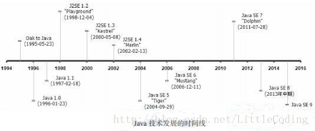
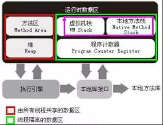
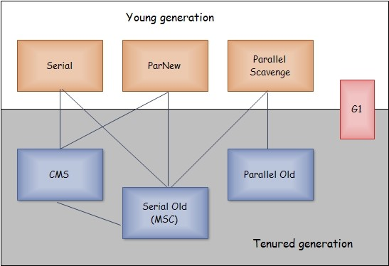
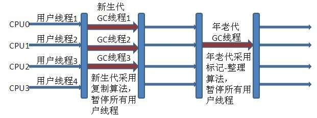
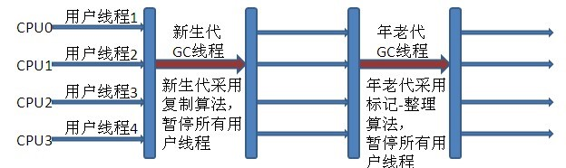
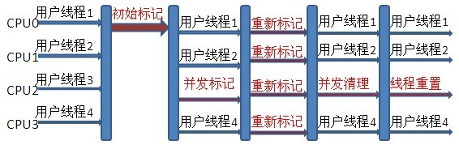
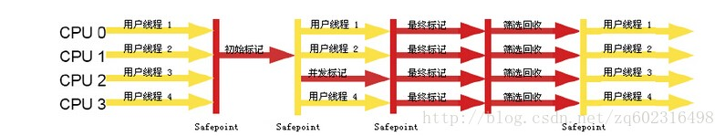

本文为《深入理解Java虚拟机》的1到5章读书笔记，主要介绍了Java简史、JVM简史和比较重要的自动内存管理机制。
第一章 走近java
java优点：
- 它摆脱了硬件平台的束缚，实现了“一次编写，到处运行”（跨平台）
- 提供一个相对安全的内存管理和访问机制，避免了绝大部分的内存泄漏和指针越界问题（安全性）
- 实现了热点代码检测和运行时编译及优化，使得java应用能随着运行时间增加而获得更高的性能（编译优化）
- 有一套完善的应用程序接口，还有无数来自商业机构和开源社区的第三方类库来帮助它实现各种各样的功能（生态环境良好）
java体系结构包括以下组成部分：
- java程序设计语言
- 各种硬件平台上的java虚拟机
- Class文件格式
- Java API类库
- 来自商业机构和开源社区的第三方Java类库
JDK：Java程序设计语言、Java虚拟机、Java API类库
JRE：Java API类库中的Java SE API子集、Java虚拟机
Java技术平台：
- Java Card
- Java ME
- Java SE
- Java EE
Java发展史

Java虚拟机发展史（读书、查资料）
Java未来：
- 模块化
模块化是解决应用系统与技术平台越来越复杂、越来越庞大问题的一个重要解决途径 - 混合语言
Java平台上的多语言混合编程正在成为主流 - 多核并行
- 如今，CPU硬件的发展方向已经从高频率转变为多核心。
- 早在JDK1.5就已经引入了java.util.concurrent包实现了一个粗粒度的并发框架
- 显卡的算数运算能力、并行能力已经远远超过CPU
- Sumatra项目就是为Java提供使用GPU和APU运算能力的工具
- 在JDK外围，也出现了专为满足并行计算需求的计算框架，如Apache的Hadoop Map/Reduce，这是一个简单易懂的并行框架，能够运行在由上千个商用机器组成的大型集群上，并且能以一种可靠的容错方式并行处理TB级别的数据集
- 进一步丰富语法（学习java8和java9的新特性）
- 64位虚拟机
Java程序运行在64位虚拟机上付出的额外代价：
- 内存问题：通常比32位系统额外增加10%~30%的内存消耗
- 运行速度：两者大约有15%左右的性能差距
第二章. Java内存区域与内存溢出异常
Java虚拟机运行时数据区：

程序计数器
- 一小块内存空间，当前线程所执行的字节码的行号指示器
- 字节码解释器工作时就是通过改变这个计数器的值来选取下一条需要执行的字节码指令
- 线程私有
- 线程执行Java方法：计数器记录正在执行的虚拟机字节码指令的地址
线程执行Native方法：计数器值为 - 唯一一个在JVM规范中没有OOM情况的区域
Java虚拟机栈
- 线程私有
- 虚拟机栈描述的是Java方法执行的内存模型：每个方法在执行的同时都会创建一个栈帧，用于存储局部变量、操作数栈、动态链接、方法出口等信息
- 通常所说的“Java内存分为堆内存和栈内存”是过于粗糙的，其中的栈所指的实际上是虚拟机栈，确切的说是虚拟机栈中的局部变量表
- 局部变量表中存放的东西：基本类型数据、对象引用、returnAddress类型
- 64位长度的long和double类型的数据会占用两个局部变量空间(Slot)，其余数据类型只占用1个
- Java虚拟机栈两种异常：
-线程请求的栈深度大于虚拟机所允许的深度，将抛出StackOverflowError异常
-扩展时无法申请到足够的内存，就会抛出OutOfMemory异常
本地方法栈
- 与虚拟机栈发挥作用类似，区别在于虚拟机栈为虚拟机执行Java方法（也就是字节码）服务，本地方法栈为虚拟机使用到的Native方法服务
- 也会抛出StackOverflowError和OutOfMemory异常
Java堆
- Java虚拟机管理内存中最大的一块
- 几乎所有的对象实力都在这里分配内存
- Java堆是垃圾收集器管理的主要区域，很多时候被叫做“GC堆”。现在收集器基本采用分代收集算法，所以Java堆细分为新生代和老年代。再细致划分：Eden空间、From Survivor空间、To Survivor空间等
- 线程共享的Java堆可能划分出多个线程私有的分配缓冲区（TLAB）
- Java堆可以处于物理上不连续的内存空间上，只要逻辑上连接的即可。
方法区
- 和Java堆一样，是各线程共享的内存区域
- 用于存储已被虚拟机加载的类信息、常量、静态变量、即时编译器编译后的代码等数据
- 在JVM规范中被描述为堆的一个逻辑部分，有个别名Non-Heap，也被称为“永久代”，设计团队选择把GC分代收集扩展到方法区
- 使用永久代实现方法区，容易出现内存溢出问题（永久代有-XX:MaxPermSize的上限，J9和JRockit只要没有触碰到进程可用内存的上限，例如32位系统的4GB，就不会出现问题）
- JVM规范对方法区的限制非常宽松，除了和Java堆一样不需要连续的内存和可以选择固定大小或者可扩展外，还可以选择不实现垃圾回收
- 垃圾回收在这个区域是比较少出现的
- 当方法区无法满足内存分配需求时，将抛出OutOfMemoryError异常
运行时常量池
- 运行时常量池是方法区的一部分
- 常量池是Class文件的一项信息，用于存放编译器生成的各种字面量和符号引用，这部分内容将在类加载后进入方法区的运行时常量池中存放
- 除了保存Class文件中描述的符号引用外，还会把翻译出来的直接引用也存储在运行时常量池中
- 运行时常量池相对于Class文件常量池的另外一个重要特征是具备动态性，运行期间也可能将新的常量放入池中，这种特性被开发人员利用得比较多的便是String类的intern()方法
直接内存
- 不是虚拟机运行时数据区的一部分，也不是Java虚拟机规范中定义的内存区域
- 频繁使用，可能导致OOM异常
- 不会受到Java堆大小的限制，会受到本机总内存大小以及处理器寻址空间的限制
HotSpot虚拟机对象揭秘
对象的创建
- 虚拟机在遇到一条new指令时，首先会检查这个指令的参数是否能在常量池中定位到一个类的符号引用,并且检查该类是否已加载。如果没有加载，还要先执行相应的类加载过程
- 内存分配方式有两种，选择哪种方式由Java堆是否规整决定，若规整，则采用“指针碰撞”方式，若不规整，则采用“空闲列表方式”；而是否规整又由所采用的垃圾回收机制决定（Serial、ParNew：指针碰撞； CMS等基于Mark-Sweep算法的：空闲列表）
- 解决并发环境下的分配内存有两种方式:
- 对分配内存空间的动作进行同步处理
- 把内存分配的动作按照线程划分在不同的空间中进行，即每个线程在堆中预先分配一小块内存（TLAB）
- 内存分配完成后，虚拟机需要将分配到的内存空间都初始化为0，这一步操作保证了对象的实例字段再Java代码中可以不赋初值就直接使用
- 虚拟机对对象进行必要的设置，如：这个对象是哪个类的实例、如何才能找到类的元数据信息、对象的哈希码、对象的GC分代年龄等信息。这些信息存放在对象的对象头中
- 上述工作结束后，从虚拟机视角来看，一个新的对象已经产生了；但从Java程序的角度来看，对象的创建才刚刚开始————进行Java代码的初始化操作
对象的内存布局
- 对象在内存中的存储布局：对象头、实例数据、对齐填充
- 对象头包括两部分信息：运行时数据和类型指针。如果对象是一个Java数组，那么对象头中还必须有一块用于记录数组长度的数据。
- 运行时数据指哈希码、GC分代年龄、锁状态标志、线程持有的锁、偏向线程ID、偏向时间戳等，官方称其为Mark Word。对象头信息是与对象自身定义的数据无关的额外存储成本，Mark Word被设计成一个非固定的数据结构以便能在极小的空间内存储尽量多的信息，它会根据对象的状态复用自己的存储空间。
- 类型指针就是对象指向它的类元数据的指针，虚拟机通过这个指针来确定这个对象是哪一个类的实例
- 实例数据是对象真正存储的有效信息，即程序中的字段内容
- 实例数据默认的分配策略是按顺序（longs/doubles、ints、shorts/chars、bytes/booleans、oops），相同宽度的字段总是分配在一起
- 对齐不是必然存在的
对象的访问定位
- Java程序通过栈上的reference数据来操作堆上的具体对象
- 对象的访问形式取决于虚拟机，目前主流的有两种方式：使用句柄 和 直接指针
- 使用句柄是间接访问，优点是reference中存储的是稳定的句柄地址，对象移动时只会改变句柄中的实例数据指针
- 使用直接指针是直接访问，优点就是速度快
OutOfMemoryError异常
Java堆溢出
Java堆用于存储对象实例，只要不断的创建对象，且保证GC Roots到对象之间有可达路径来避免垃圾回收机制清除这些对象，那么在对象数量达到最大堆的容量限制之后就会产生内存溢出的异常
虚拟机栈和本地方法栈的溢出
- HotSpot虚拟机中并不区分虚拟机栈和本地方法栈
- 关于虚拟机栈和本地方法栈，Java虚拟机规范中描述了两种异常：
- 如果线程请求的栈深度大于虚拟机所允许的最大深度，将抛出StackOverflowError异常
- 如果虚拟机在扩展栈时无法申请到足够的内存空间，则抛出OutOfMemoryError异常
- 在单个线程下，无论是由于栈太小还是虚拟机栈容量太小，当内存无法分配时，虚拟机抛出的都是StackOverflowError异常
方法区和运行时常量池溢出
- 在JDK 1.6中 intern() 方法会把首次遇到的字符串实例复制到永久代中，返回的也是永久代中这个字符串实例的引用
- 在JDK 1.7中 intern() 方法不会再复制实例，只是在常量池中记录首次出现的实例引用
- StringBuilder 创建的字符串实例在Java堆上
第三章. 垃圾收集器与内存分配策略
概述
Lisp是第一门真正使用内存分配和垃圾收集的语言
GC需要考虑的三个问题：
- 哪些内存需要回收
- 什么时候回收
- 如何回收
针对上一章中讲过的内存区域，分为两类：
- 一种是程序计数器、虚拟机栈、本地方法栈3个区域，随线程而生。随线程而灭。这几个区域的内存分配和回收都具备确定性，不需要过多地考虑回收的问题。
- 一种是Java堆和方法区，只有在程序处于运行期间才会知道会创建哪一些对象，这部分内存的分配和回收都是动态的，垃圾收集器所关注的是这部分内存。
对象已死了吗？
引用计数算法
- 给对象中添加一个引用计数器，每当有一个地方引用它时，计数器值就加1；当引用失效时，计数器值就减1；任何时刻计数器为0的对象就是不可能再被使用的。
- 主流的Java虚拟机里面没有选用引用计数算法来管理内存，主要原因是由于很难解决对象之间的相互循环引用的问题。
可达性分析
- 主流的商用程序语言（Java、C#、Lisp）的主流实现中，都是通过可达性分析来判断对象是否存活的
- 从一个起始对象GC Roots开始向下搜索，搜索所走过的路径称为引用链。当一个对象到GC Roots没有任何引用链相连时（也就是图论中说的，GC Roots到这个对象不可达），则证明这个对象是不可用的
- 在Java中，可作为GC Roots的对象包括：
- 虚拟机栈（栈帧中的本地变量表）中引用的对象
- 方法区中类静态属性引用的变量
- 方法区中常量引用的变量
- 本地方法栈中JNI（即一般说的Native方法）引用的对象
再谈引用
- JDK1.2之前引用的定义：如果reference类型的数据中存储的数值代表的是另外一块内存的起始地址，就称这块内存代表着一个引用
- JDK1.2之后，引用分为强引用、软引用、弱引用、虚引用四种：
- 强引用：是指在程序代码中直接存在的引用，譬如引用new操作符创建的对象。只要强引用还存在，垃圾收集器就永远不会回收掉被引用的对象
- 软引用：用来描述一些还有用但并非必须的对象。在系统将要发生内存溢出异常之前，将会把这些对象列进回收范围之中进行第二次回收。
- 弱引用：非必需对象，被弱引用关联的对象只能生存到下一次垃圾收集发生之前。当垃圾收集器工作时，无论当前内存是否足够，都会回收掉只被弱引用关联的对象。
- 虚引用：也称幽灵引用或者幻影引用，最弱的引用关系。一个对象是否有虚引用的存在，完全不会对其生存时间构成影响，也无法通过虚引用来取得一个对象实例。
生存还是死亡
- 要真正宣告一个对象死亡，至少经历两次标记：
- 对象在进行可达性分析后发现没有与GC Roots相连接的引用链，那它将会第一次标记并进行一次筛选，筛选条件是此对象是否有必要执行finalize()方法
- finalize()方法是对象逃脱死亡命运的最后一次机会，稍后GC会对F-Queue中对象进行第二次小规模标记。只要重新与引用链上的任何一个对象建立关联，就会在finalize()中成功拯救自己；如果对象这个时候还没有脱逃，那么基本上它就真的被回收了。
- 当对象没有覆盖finalize()方法或者finalize()方法已经由虚拟机调用过，都视为finalize()没有必要执行
- 任何一个对象的finalize()方法都只会被系统自动调用一次
回收方法区
- 很多人认为方法区（或者hotspot虚拟机中的永久代）是没有垃圾回收的，在方法区中进行垃圾收集的“性价比”一般是比较低的。
- 永久代垃圾收集主要回收两部分内容：废弃常量和无用的类。
- 回收废弃常量和回收Java堆中的对象非常类似。举个例子，假设一个字符串“abc”已经进入了常量池中，但是当前系统没有一个String对象是叫做“abc”的。换句话说，就是没有任何String对象引用常量池中的“abc”常量，也没有其他地方引用了这个字面量，如果这个时候发生内存回收，这个“abc”常量就会被系统清理出常量池。
- 无用的类判定三条件：
- 该类所有的实例都已经被回收，也就是Java堆中不存在该类的任何实例
- 加载该类的ClassLoader已经被回收
- 该类对应的java.lang.Class对象没有在任何地方已经被引用，无法在任何地方通过反射访问该类的方法
垃圾收集算法
垃圾收集算法主要有三种：标记-清除算法、复制算法和标记-整理算法
标记-清除算法
- 最基础的收集算法，分为两阶段，“标记”和“清除”：首先标记所有需要回收的对象，在标记完成后统一回收所有被标记的对象
- 不足有两个：一是效率问题，标记和清除两个过程的效率都不高；另一个是空间问题，标记清除后会产生大量不连续的内存碎片，导致无法给大对象分配内存
复制算法
- 思路：将可用内存按容量分为两个块，每次只用其中之一。当这一块内存用完之后，将还存活的对象复制到另一边去，然后清除所有已经使用过的部分
- 优点：实现简单，运行高效
- 缺点：代价是将内存缩小了一部分，而且可能会需要额外的担保空间
- 现状：现代商业虚拟机都采用这种收集算法来回收新生代，将内存分为一块较大的Eden空间和两块较小的Survivor空间，每次使用一块Eden和一块Survivor。HotSpot虚拟机默认Eden和Survivor大小比例是8:1，每次新生代中整个容量只有10%内存会被浪费。当Survivor空间不够用的时候，需要依赖其他内存（这里指老年代）进行分配担保。
标记-整理算法
根据老年代特点，有人提出来“标记-整理”算法，标记过程和“标记-清除”算法一样，后续不对可回收对象进行清理，而是让所有存活对象都向一段移动，然后直接清理掉端边界以外的内存。
分代收集算法
- 当前商用虚拟机都采用了这种算法，根据对象的存活周期将内存划分为几块，一般是把Java堆分为新生代和老生代，根据各个年代采用适当的收集算法
- 新生代一般采用复制算法，老生代一般采用 标记-清理 或者标记-整理 进行回收
HotSpot的算法实现
枚举根节点
- 可达性分析中，需要从GC Roots节点找引用链，可作为GC Roots的节点我们上面分析过，很多应用仅仅方法区就几百兆，所以检查很耗时
- 可达性分析中另一个对执行时间敏感的地方在于GC停顿上。也就是分析工作必须确保“一致性”快照中进行。一致性指的是GC执行时必须停顿所有Java执行线程（Sun将这个事件叫做“Stop The World”），即使在号称（几乎）不发生停顿的CMS收集器中，枚举根节点时也是必要停顿的。
- 目前主流的Java虚拟机使用的都是准确式GC，当执行系统停顿下来后并不需要一个不漏的检查完所有执行上下文和全局的引用变量，虚拟机应当有办法直接得知哪些地方存着对象的引用
- HotSpot使用一组称为OopMap的数据结构来记录哪些地方存着对象的引用
- 在类加载完成的时候，HotSpot就把对象内什么偏移量上是什么类型的数据计算出来，在JIT编译过程中，也会在特定的位置记录下栈和寄存器中哪些位置是引用。
安全点
- HotSpot没有为每条指令都生成OopMap，只是在特定位置记录了这些信息，这些位置称为安全点
- 程序执行并非在所有地方都能停顿下来开始GC，只有在到达安全点时才能暂停。
- 给多线程记录安全点时有两种方案：抢先式中断 和 主动式中断
- 抢先式中断不需要线程的代码主动去配合，在GC发生时，首先把所有线程的代码全部中断，如果发现有线程中断的地方不在安全点上，就恢复线程，让它跑在安全点上。现在几乎没有虚拟机采用抢断式中断来暂停线程响应GC事件了。
- 主动式中断的思想是当GC需要中断线程时不直接对线程进行操作，仅仅简单的设置一个标志，各个线程执行时主动去轮询这个标志，发现中断标志为真时就自己中断挂起
安全区域
- 为了处理“不执行”的程序的安全点问题，提出了安全区域来解决问题（所谓不执行就是没有分配CPU时间，典型的例子就是线程处于Sleep状态或者Blocked状态，这时候线程无法响应JVM中断请求）
- 安全区域是指在一段代码片段之中，引用关系不会发生变化，在这个区域内的任何地方进行GC都是安全的
- 当线程执行到安全区域的代码时，首先标识自己已经进入了安全区域了，这样，当在这段时间里JVM要发起GC时，就不用管标识自己为Safe Region状态的线程了。
- 当线程要离开安全区域的时候，它要检查系统是否已经完成了根节点枚举（或者整个GC过程），如果完成了，线程继续执行；否则它就必须等待直到收到可以安全离开安全区域的信号为止。
- 内存回收如何进行是由虚拟机所采用的GC收集器决定的
垃圾收集器
HotSpot虚拟机的垃圾收集器关系：

上面有7中收集器，分为两块，上面为新生代收集器，下面是老年代收集器。如果两个收集器之间存在连线，就说明它们可以搭配使用。
并发和并行
先解释下什么是垃圾收集器的上下文语境中的并行和并发：
- 并行（Parallel）：指多条垃圾收集器线程并行工作，但此时用户线程仍然处于等待。
- 并发（Concurrent）：指用户线程与垃圾收集器线程同时执行（但不一定是并行的，可能会交替执行），用户程序在继续运行，而垃圾收集器程序运行于另一个CPU之上。
Serial(串行GC)收集器
Serial收集器是一个新生代收集器，单线程执行，使用复制算法。它在进行垃圾收集时，它不仅只会使用一个CPU或者一条收集线程去完成垃圾收集作，而且必须暂停其他所有的工作线程(用户线程),直到它收集完成。
是Jvm client模式下默认的新生代收集器。对于限定单个CPU的环境来说，简单高效，Serial收集器由于没有线程交互的开销，专心做垃圾收集自然可以获得最高的单线程收集效率，因此是运行在Client模式下的虚拟机的不错选择（比如桌面应用场景）。
ParNew收集器
- ParNew收集器是Serial收集器的多线程版本
- ParNew收集器是运行在Server模式下虚拟机中首选的新生代收集器

Parallel Scavenge收集器
- Parallel Scavenge收集器是一个新生代收集器，采用复制算法
- Parallel Scavenge收集器的特点是他的关注点与其他收集器不同。其他收集器的目标是尽可能的缩短用户线程的停顿时间，而Parallel Scavenge收集器的目标是达到一个可控的吞吐量
- 高吞吐量可以高效的利用CPU时间，尽快地完成程序的运算任务，主要适合在后台运算而不需要太多交互的任务
- GC停顿时间的缩短是以牺牲吞吐量和新生代空间来换取的
- Parallel Scavenge收集器也经常被称为“吞吐量优先”收集器

Serial Old收集器
- Serial Old收集器是Serial收集器的老年代版本，是一个单线程收集器，使用标记-整理算法
- Serial Old收集器主要用于Client模式下
- Serial Old收集器另一种用途是作为CMS收集器的后备预案

Parallel Old收集器
- Parallel Old收集器是Parallel Scavenge收集器的老年代版本，使用多线程和标记-整理算法
- 在注重吞吐量和CPU资源敏感的场合，都可以优先考虑Parallel Scavenge加Parallel Old收集器
CMS收集器（重点）
- CMS收集器是一种以获取最短的回收停顿时间为目标的收集器
- CMS收集器基于标记-清除算法实现，分为四个步骤：初始标记、并发标记、重新标记、并发清除
- 步骤详解：
- 初始标记：标记一下GC Roots能直接关联到的对象，速度很快
- 并发标记：进行GC Roots Tracing
- 重新标记：是为了修正那些在并发标记期间因用户程序继续运作而导致标记产生变动的那一部分对象的标记记录，在这一阶段的停顿时间会比初始标记阶段稍长一点
- 从总体上说，CMS收集器的内存回收过程是与用户线程一起并发执行的
- CMS收集器的缺点：
- CMS收集器对CPU资源非常敏感
- CMS收集器无法处理浮动垃圾，可能出现“Concurrent Mode Failure”失败而导致另一次Full FC的产生
- 由于CMS收集器采用了标记-清除算法，所以在回收结束时会有大量空间碎片产生，碎片过多时，在给大对象分配内存时会有很大麻烦

G1收集器（重点）
G1是一款面向服务端应用的垃圾收集器
G1具有如下特点：
- 并行与并发：多CPU缩短Stop The World的时间，其他部分收集器需要停顿执行GC的地方，G1通过并发让Java程序继续执行
- 分代收集：不需要其他收集器配合就能独立管理整个GC堆
- 空间整合：整体基于“标记-整理”，局部基于“复制”，不会产生内存碎片
- 可预测的停顿：让使用者明确指定一个长度为M毫秒的时间片段内，消耗在垃圾收集上的时间不得超过N毫秒。具备实时Java（RTSJ）的垃圾收集器的特征。
G1收集器将整个Java堆划分为多个大小相等的独立区域，虽然还保留有新生代和老生代的概念，但新生代和老生代不再是物理隔的了，他们是一部分Region的集合
- G1可以有计划地避免在整个Java堆中进行全区域的垃圾收集。G1跟踪各个Region里面的垃圾堆积的价值大小，在后台维护一个优先列表，每次根据允许的收集时间，优先回收价值最大的Region
- G1将内存化整为零，听起来比较容易，实际问题在于：Region不可能是孤立的，一个对象分配在某个Region内部，并非只能被本Region中对象所引用，而是可以与整个Java堆任意对象发生引用关系。
- G1使用Remembered Set来避免全堆扫描。G1中每个Region都有一个与之对应的Remembered Set。虚拟机发现程序在对Reference类型数据进行写操作，会产生暂时中断写操作，检查Reference引用的对象是否处于不同的Region之中，如果是，便通过CardTable把相关引用信息记录到被引用对象所属的Region的Remembered Set之中。
- GC收集器的运作步骤：
- 初始标记
- 并发标记
- 最终标记
- 筛选回收
- 如果现在采用的收集器没有出现问题，那就没有任何理由去选择G1；如果应用追求低停顿，那G1可以作为一个尝试选择。

内存分配与回收策略
Java自动内存管理两大问题：
给对象分配内存以及回收分配给对象的内存
对象的内存分配，往大方向上说，就是在堆上分配（但也可能经过JIT编译后被拆散为标量类型并间接在栈上分配）。对象主要分配在新生代的Eden区上，如果启动了本地线程分配缓冲，将按线程优先在TLAB分配。少数情况也会直接分配在老年代中。
对象优先在Eden分配
- 大多数情况下，对象分配在新生代Eden区中分配
- 当Eden区没有足够空间进行分配的时候，虚拟机将发起一次Minor GC
- Minor GC和Full GC区别：
- 新生代GC（Minor GC）：新生代GC，非常频繁，回收速度快
- 老年代GC（Major GC/Full GC）：老年代GC，又称为Major GC，经常会伴随至少一次Minor GC，速度比较慢
大对象直接进入老年代
- 大对象是指需要大量连续内存空间的Java对象，最典型的长字符串以及数组
- 虚拟机提供了一个-XX:PretenureSizeThreshold参数，令大于这个设置值的对象直接在老年代分配
长期存活的对象将进入老年代
- 虚拟机采用分代思想管理内存，为了区分对象应放在新生代还是老年代，虚拟机给每个对象定义了一个对象年龄（Age）计数器。如果对象在Eden出生并经过第一次Minor GC后仍然存活，并且能被Survivor容纳的话，将被移动到Survivor空间中，并且对象年龄设为1。对象在Survivor区中每“熬过”一次Minor GC，年龄就+1，当它的年龄增加到一定程度（默认15岁），就晋升到老年代中。
- 对象晋升到老年代的年龄阈值，可以通过-XX:MaxTenuringThreshold设置
动态对象年龄判定
- 为了更好适应不同程序的内存状况，虚拟机并不是永远地要求对象的年龄必须达到MaxTenuringThreshold才能晋升到老年代
- 如果在Survivor空间中相同年龄所有对象大小的总和大于Survivor空间的一半，年龄大于或等于该年龄的对象就可以直接进入老年代
空间分配担保
- 在发生Monor GC之前，虚拟机会检查老年代最大可用的连续空间是否大于新生代所有对象总空间。如果条件成立，那么Monor GC可以确保是安全的
- 如果上述条件不成立，虚拟机会查看HandlePromotionFailure设置值是否允许担保失败。如果允许，那么检测老年代最大可用的连续空间是否大于历次晋升到老年代对象的平均大小。
- 如果是，尝试进行一次Monor GC，尽管是有风险的。
- 如果小于，或者HandlePromotionFailure设置不允许冒险，那这时要改为进行一次Full GC
第四章. 虚拟机性能监控与故障处理工具
概述
定位问题时，知识和经验是关键基础、数据（运行日志、异常堆栈、GC日志、线程快照、堆转储快照）是依据、工具是运用知识处理数据的手段。
JDK的命令行工具
- 工具主要包括用于监视虚拟机和故障处理的工具
- 命令行工具大多数是jdk/lib/tools.jar类库的一层薄包装，主要的功能代码是在tools类库中实现的
- 借助tools.jar类库里面的接口，我们可以直接在应用程序中实现功能强大的监控分析功能
- 主要JDK命令行工具包括：
- jps：显示指定系统内所有HotSpot虚拟机进程
- jstat：用于收集HotSpot虚拟机各方面的运行数据
- jinfo：显示虚拟机配置信息
- jmap：生成虚拟机的内存转储快照（heapdump文件）
- jhat：用于分析heapdump文件，它会建立一个HTTP/HTML服务器，让用户可以在浏览器上查看分析结果
- jstack：显示虚拟机的线程快照
jps：虚拟机进程状况工具
- 除了名字和UNIX的ps相似，功能也和ps命令类似：可以列出正在运行的虚拟机进程，并显示虚拟机执行主类（Main Class，main函数所在的类）名称以及这些进程的本地虚拟机唯一ID（LVMID）
- 如果同时启用了多个虚拟机进程，无法根据进程名称定位，那就只能依赖jps命令显示主类的功能来区分了。
- jps可以通过RMI协议查询开启了RMI服务的远程虚拟机进程状态，hostid为RMI注册表中注册的主机名
jstat：虚拟机统计信息监视工具
- jstat是用于监视虚拟机各种运行状态信息的命令行工具。它可以显示本地或者远程虚拟机进程中的类装载、内存、垃圾收集、JIT编译等运行数据
- 命令格式中VMID和LVMID特别说明：如果是本地虚拟机进程，VMID和LVMID是一致的；如果是远程虚拟机进程，VMID格式参考《深入理解JVM》P105页
- 使用jstat工具在纯文本状态下监视虚拟机状态的变化，不如VisualVM等可视化监控工具直观
jinfo：Java配置信息工具
- jinfo的作用是实时地查看和调整虚拟机各项参数。
- 查看虚拟机启动时显式指定的参数列表，用-v；查看未被显式指定的参数的系统默认值，使用-flag（JDK1.6及以上版本，使用java -XX:+PrintFlagsFinal也是很好的选择）
jmap：Java内存映像工具
- jmap命令用于生成堆转存快照（heapdump或者dump文件）
- 不使用jmap命令来暴力获取Java堆转储快照方法：
- -XX：+HeapDumpOnOutOfMemoryError参数，可以让虚拟机在OOM异常出现之后自动生成dump文件
- 通过-XX:+HeapDumpOnCtrlBreak参数可以使用[Ctrl]+[Break]键来让虚拟机生成dump文件
- 在Linux系统下通过Kill -3命令发送进程退出信号“吓唬”一下虚拟机，也能拿到dump文件
- jmap除了可以拿到dump文件，还可以查询finalize执行队列、Java堆和永久代的详细信息，如空间使用率、当前使用的是在哪种收集器等
jhat：虚拟机堆转储快照分析工具
- jhat和jmap搭配使用，来分析jmap生成的堆转储快照
- 一般不会直接使用jhat来分析dump文件，原因有二：
- 一般不会在部署应用程序的服务器上直接分析dump文件
- jhat分析功能相对比较简陋，VisualVM等工具都能实现比jhat更强大更专业的分析功能
jstack：Java堆栈跟踪工具
- jstack命令用于生成虚拟机当前时刻的线程快照（一般称为threaddump或者javacore文件）
- 线程快照就是当前虚拟机内每一条进程正在执行的方法堆栈的集合。生成堆栈快照的主要，目的是定位线程长时间停顿的原因，如线程间死锁、死循环、请求外部资源导致的长时间停顿等都是导致线程长时间停顿的常见原因
- 在JDK1.5中，java.lang.Thread类新增了一个getAllStackTrace()方法用于获取虚拟机中所有线程的StackTraceElement对象
- jstack可用来制作管理员页面
HSDIS：JIT生成代码反汇编
- HSDIS是一个Sun官方推荐的HotSpot虚拟机JIT编译代码的反汇编插件，包含在HotSpot虚拟机的源码之中，但没有提供编译后的程序
- 作用是让HotSpot的-XX:PrintAssembly指令调用它来把动态生成的本地代码还原为汇编代码输出，同时还生成了大量非常有价值的注释
JDK的可视化工具
JConsole：Java监视与管理控制台
- 基于JMX的可视化监视、管理工具
- 启动JConsole后，自动搜索出本机运行的所有虚拟机进程，不需要用户自己再使用jps来查询了
- “内存”页签相当于可视化的jstat命令
- “线程”页签相当于可视化的jstack命令
VisualVM：多合一故障处理工具
- VisualVM是到目前为止随JDK发布的功能最强大的运行监视和故障处理程序
- VisualVM有一个很大的优点：不需要被监视的程序基于特殊Agent运行，因此对应用程序的实际性能影响很小
- VisualVM可以做到：
- 显示虚拟机进程以及进程的配置、环境信息（jps、jinfo）
- 监视应用程序的CPU、GC、堆、方法区以及线程的信息（jstat、jstack）
- dump以及分析堆转储快照（jmap、jhat）
- 方法级的程序运行性能分析，找出被调用最多、运行时间最长的方法
- 离线程序快照：收集程序的运行时配置、线程dump、内存dump等信息建立一个快照，可以将快照发送开发者处进行Bug反馈
- 其他plugins的无限可能性……
第五章. 调优案例分析与实战
高性能硬件上的程序部署策略
在线文档类型网站，用户交互性强，对停顿时间敏感，网站形式的应用，主要对象的生命周期是请求级或页面级的“朝生夕灭”的对象，无需进入老年代，最好在MinorGC的时候就回收，会话级和全局级的长生命对象很少。
硬件资源：4个CPU，16GB物理内存，操作系统64位CentOS5.4，web服务器Resin。
软件设置：64位JDK1.5，Xmx=Xms=12GB。
问题：网站每隔十几分钟出现十几秒的停顿。
分析：监控服务器运行状况后发现，GC停顿导致，虚拟机在server模式下选择的是Parallel Scavenge收集器，回收12GB堆的Full GC时间14秒。另外文档序列化产生的大对象进入老年代。
高性能硬件上的程序部署策略有两种：
通过64位jdk使用大内存，控制Full GC的频率，如一天一次，将内存可用空间保持在一个稳定的水平。
使用若干个32位虚拟机建立逻辑集群来利用硬件资源，在一台物理机器上启动多个应用服务器进程，给每个服务器进程分配不同的端口，然后在前端搭建一个负载均衡器，以反向代理的方式来分配访问请求。
解决方案：5个32位JDK的逻辑集群，每个进程2GB内存，其中堆1.5GB，建立一个Apache服务作为前端均衡代理访问门户，改为CMS收集器。
集群间同步导致的内存溢出
B/S的MIS系统
硬件：2个CPU，8GB内存的HP小型机
服务器：WebLogic9.2，每台机器启动了3个WebLogic实例，构成一个6个节点的亲合式集群，节点之间没有session同步。
有一些需求要实现部分数据在各个节点共享，刚开始这些数据存放在DB,由于读写频繁，竞争激烈，对性能影响很大，换成了JBossCache构建的全局缓存。
问题：服务器使用一段时间后，不定期多次出现OOM
解决：代码是否有内存泄漏，-XX:+HeapDumpOnOutOfMemoryError，dump文件有大量org.jgroups.protocols.pbcast.NAKACK对象
JBossCache的缺陷，读可以频繁，频繁写导致重发数据在内存中不断堆积，产生溢出，当网络情况不能满足传输要求的时候。
堆外内存导致的溢出错误
B/S的电子考试系统，逆向AJAX技术，CometD 1.1.1服务端推送框架，Jetty7.1.4服务器
硬件：普通PC机，Core i5 CPU，4GB内存，32 win操作系统
问题：服务器不定时抛出内存溢出异常
解决：开大堆内存到1.6GB，没用；-XX:HeapDumpOnOutOfMemoryError，没反应；挂jstat，GC也不频繁。
系统日志中显示：at org.eclipse.jetty.io.nio.DirectNIOBuffer.
Direct Memory只剩下0.4GB空间，内存溢出。Direct Memory空间不足时，只能等待老年代满了后Full GC时清理掉内存的废弃对象，否则，只能等到内存溢出时，先catch掉，再在catch块里大喊System.gc()。
除了java堆和方法区，还有一些区域的内存总和受到操作系统进程最大内存的限制：
- Direct Memory，-XX:MaxDirectMemorySize调整大小
- 线程堆栈：通过-Xss调整大小，无法分配新的栈时，抛出StackOverflowError，无法建立新的线城时，抛出OutOfMemoryError
- Socket缓冲区：Receive区和Send区分别占用37kb，25kb，连接太多时，会抛出IOException：Too many open files
- JNI代码：如果JNI调用本地库，本地库使用的内存也不在堆中
- 虚拟机和GC：虚拟机、GC代码执行也需要消耗一定内存
外部命令导致系统缓慢
数字校园应用系统，运行在一台4CPU的Solaris 10操作系统，中间件是GlassFish服务器。
问题：使用mpstat发现CPU使用率很高，不正常。
调研：通过Solaris 10的Dtrace脚本发现最消耗CPU资源的竟然是“fork”系统调用
分析：每个用户请求的处理都需要执行一个外部shell脚本来获取系统的一些信息。执行这个shell脚本是通过Java的Runtime.getRuntime().exec()方法调用的。
Java虚拟机执行这个命令的过程是：首先克隆一个和当前虚拟机拥有一样环境变量的进程，再用这个新的进程去执行外部命令，最后退出这个进程。
如果频繁执行这个命令，系统消耗很大，不仅是CPU，内存消耗也很大。
解决方法：去掉这个Shell脚本执行的语句，改为使用Java的API去获取这些信息
服务器JVM进程奔溃
一个基于B/S的MIS系统
硬件：两台2个CPU、8GB内存的HP系统、WebLogic9.2的服务器
问题：运行期间频繁出现集群节点的虚拟机进程自动关闭的现象，留下一个hs_err_pid###.log文件后，进程就消失了
分析：远程断开连接异常，发现系统最近在与一个OA门户做集成，在MIS系统工作流的待办事项变化时，要通过Web服务通知OA门户系统。由于MIS系统用户多，待办事项变化快，为了不被OA系统速度拖累，使用异步方式调用Web服务。但由于两边服务速度不对等，时间越长就积累了越多的Web服务没有调用完成，导致等待的线程和Socket连接越来越多，最终在超过虚拟机的承受能力后使得虚拟机进程奔溃
解决办法：通知OA门户修复无法使用的集成接口，并将异步调用改成生产者/消费者模式的消息队列实现
不恰当数据结构导致内存占用过大
硬件：一个后台RPC服务器，64位虚拟机，内存配置为-Xms4g -Xmx8g -Xmnlg，ParNew+CMS收集器组合
问题：平时Minor GC时间约30毫秒，但业务需要每10分钟加载一个80MB的数据文件到内存进行数据分析，这些数据形成超过100万个HashMap
分析：
- 新生代的绝大部分对象都是可清除的，ParNew采用复制算法，如果存活对象过多，把这些对象复制到Survivor并维持这些对象引用的正确就成为了一个沉重的负担
- 上面一个原因只是表面的，根本是在与使用HashMap
解决办法：
- 考虑将Survivor空间去掉，让新生代存活的对象在第一次Minor GC后立即进入老年代，等到Major GC的时候再清理他们
- HashMap的空间使用效率是18%，可以考虑修改数据结构
由Windows虚拟内存导致的长时间停顿
一个带心跳检测功能的GUI桌面程序，每15秒发一次心跳检测信号，但是偶尔会出现一次接近1分钟的完全无日志输出，处于停顿状态
分析：因为是桌面程序，所需内存并不大（-Xmx256m），所以开始并没有想到是GC导致的程序停顿，但是读GC日志，发现大部分GC时间都控制在100毫秒之内，偶尔出现一次1分钟的GC。另外就是GUI程序内存变化的一个特点，当它最小化的时候，资源管理中显示的占用内存大幅度减小，但是虚拟内存没变。
原因：怀疑是最小化时它的工作内存被自动交换到磁盘的页面文件之中了，这样发生GC时有可能因为恢复页面文件的操作而导致不正常的GC停顿
解决办法：加入参数“-Dsun.awt.keepWorkingSetOnMinimize=true”